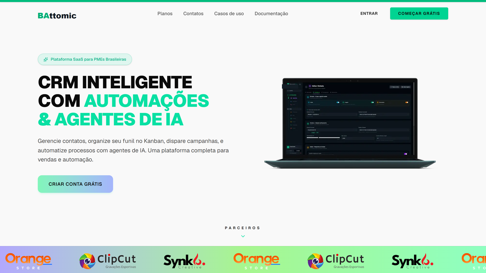
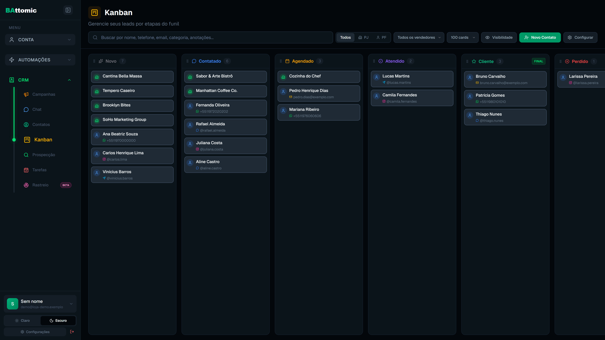
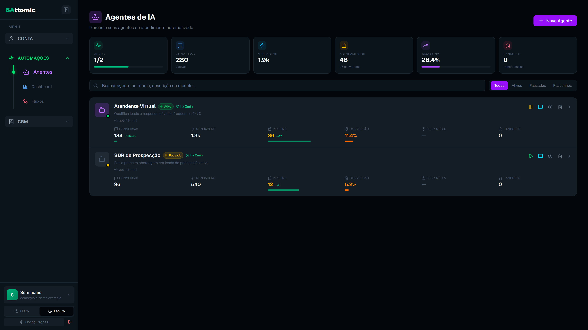
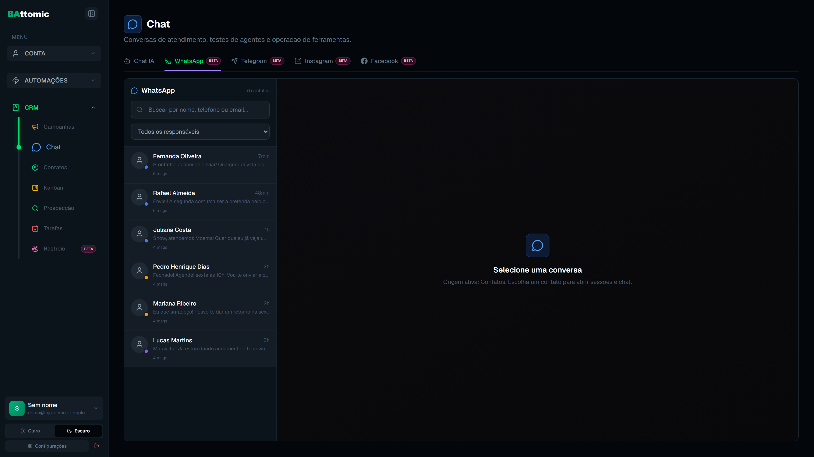
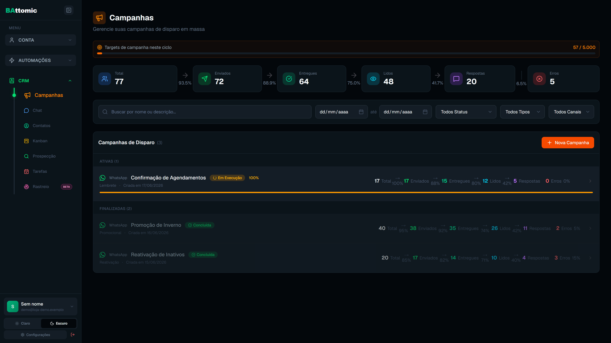
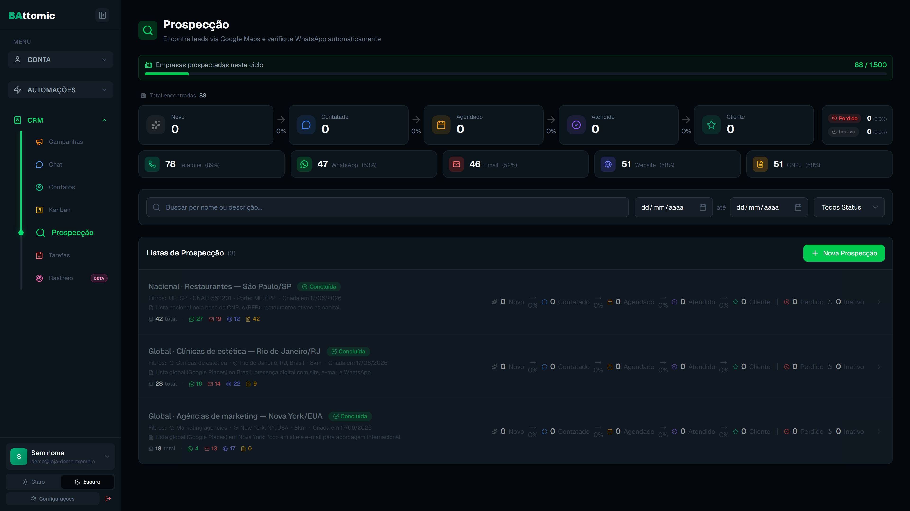
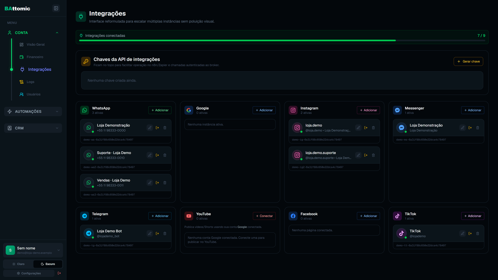
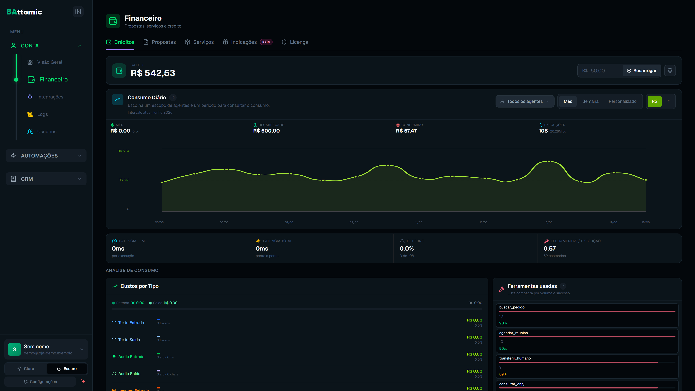

BAttomic — Plataforma SaaS BAttomic — SaaS Platform
A evolução natural dos meus agentes de IA em um produto: uma plataforma SaaS multi-tenant que reúne CRM, automações com agentes e billing numa única aplicação — cada cliente sobre seu próprio banco de dados isolado. The natural evolution of my AI agents into a product: a multi-tenant SaaS platform bringing together CRM, agent automations and billing in a single application — each client on its own isolated database.
BAttomic é um nome provisório: o produto ainda não tem nome definitivo. BAttomic is a placeholder name: the product doesn't have a final name yet.

De Serviço a Produto From Service to Product
A ideia surgiu na PromovAds, onde eu criava automações integradas à Meta e ao Google e agentes de IA no n8n. Depois de desenvolver e validar agentes de IA sob medida para diversas empresas — principalmente clínicas e PMEs da área da saúde — o próximo passo natural foi transformar essa experiência em produto. Nasceu a plataforma: em vez de montar cada automação do zero para cada cliente, a plataforma entrega CRM, agentes de IA e cobrança de forma padronizada, escalável e self-service.
The idea was born at PromovAds, where I built automations integrated with Meta and Google and AI agents in n8n. After building and validating custom AI agents for several companies — mainly clinics and healthcare SMEs — the natural next step was to turn that experience into a product. That's how the platform was born: instead of assembling each automation from scratch per client, the platform delivers CRM, AI agents and billing in a standardized, scalable, self-service way.
O que antes eu montava em workflows do n8n hoje roda dentro da própria plataforma: o runtime dos agentes, o editor de fluxos e a prospecção foram reescritos em código, sem depender de ferramenta externa. Por enquanto o produto usa o nome provisório BAttomic, o mesmo do domínio que já uso hoje.
What I used to assemble in n8n workflows now runs inside the platform itself: the agent runtime, the flow editor and prospecting were rewritten in code, with no external tool. For now the product uses the placeholder name BAttomic, the same as the domain I already use.
Quatro Pilares numa Só Aplicação Four Pillars in a Single App
CRM CRM
Gestão de contatos, leads e status de negociação por cliente, com pipeline configurável. Base de dados que alimenta e é alimentada pelos agentes de IA.
Contact, lead and deal-status management per client, with a configurable pipeline. A database that feeds and is fed by the AI agents.
Agentes de IA AI Agents
Runtime próprio com adapters por provedor (Anthropic, OpenAI, Google Gemini, DeepSeek), memória da conversa, ferramentas, passagem para humano e controle de custo por conversa. Campanhas e prospecção rodam como jobs em background.
An in-house runtime with per-provider adapters (Anthropic, OpenAI, Google Gemini, DeepSeek), conversation memory, tools, human handoff and per-conversation cost control. Campaigns and prospecting run as background jobs.
Fluxos no Estilo n8n n8n-Style Flows
Editor visual de automação: gatilhos por mensagem, cron, webhook ou evento; mensagens e perguntas em WhatsApp, Telegram, Instagram e Messenger; condições, variáveis, delays, requisições HTTP, nodes de IA, sub-fluxos e transferência para humano.
A visual automation editor: triggers by message, cron, webhook or event; messages and questions on WhatsApp, Telegram, Instagram and Messenger; conditions, variables, delays, HTTP requests, AI nodes, sub-flows and human handoff.
Billing & Cobrança Billing & Payments
Licenças, faturas e propostas, com páginas públicas de proposta e checkout. A cobrança nasceu no Mercado Pago e está em migração para o Asaas. Monetização embutida na própria plataforma.
Licenses, invoices and proposals, with public proposal and checkout pages. Billing started on Mercado Pago and is being migrated to Asaas. Monetization built into the platform itself.
Por Dentro do Produto Inside the Product
Não é um protótipo: são telas reais da plataforma em funcionamento. Do CRM aos agentes de IA, cada módulo foi desenhado para uma operação de PME rodar o dia inteiro ali dentro.
Not a prototype: these are real screens of the working platform. From the CRM to the AI agents, every module was built for an SMB to run its whole day inside it.







Performance & Primeiros Clientes Performance & First Clients
A landing já nasceu rápida e medida: pontuações altas em Lighthouse, PageSpeed e GTmetrix, com tempo de bloqueio mínimo. E não é só teoria — a plataforma já apoia operações reais.
The landing shipped fast and measured: high Lighthouse, PageSpeed and GTmetrix scores, with minimal blocking time. And it's not just theory — the platform already backs real operations.
E não é só teoria: a plataforma já aparece com parceiros reais — OrangeStore, ClipCut e Synk Creative —, operações que ajudei a estruturar.
And it's not just theory: the platform already lists real partners — OrangeStore, ClipCut and Synk Creative — operations I helped set up.
Planos & Monetização Plans & Monetization
A cobrança é parte do produto, não um anexo. Quatro faixas cobrem do autônomo à operação que precisa de agentes de IA sob medida — tudo self-service.
Billing is part of the product, not a bolt-on. Four tiers cover everyone from solo operators to teams needing custom AI agents — all self-service.
Comece grátis, escale conforme cresce, cancele quando quiser. Cobrança self-service.
Start free, scale as you grow, cancel anytime. Self-service billing.
Arquitetura Multi-Tenant Multi-Tenant Architecture
O coração técnico da plataforma é a isolação por cliente: um banco de controle global (control plane) para clientes, usuários, licenças e faturas, e um banco dedicado por tenant para os dados operacionais (contatos, agentes, fluxos, campanhas). Toda rota que toca dados de cliente passa por uma resolução em runtime — coleções de tenant nunca são consultadas na conexão global.
The technical heart of the platform is per-client isolation: a global control-plane database for clients, users, licenses and invoices, and a dedicated database per tenant for operational data (contacts, agents, flows, campaigns). Every route touching client data goes through a runtime resolution — tenant collections are never queried on the global connection.
- Banco por cliente: Database per client: Modelos globais e schemas de tenant separados, resolvidos dinamicamente por ID de cliente para garantir isolamento total de dados. Global models and tenant schemas kept separate, resolved dynamically by client ID to guarantee full data isolation.
-
Permissões granulares:
Granular permissions:
Catálogo de permissões, role templates e guards de rota (
withPermission()/withSuperAdmin()) protegendo cada endpoint e cada tela. Permission catalog, role templates and route guards (withPermission()/withSuperAdmin()) protecting every endpoint and screen. - API REST extensa: Extensive REST API: Mais de 150 rotas de API, além de cron jobs e webhooks, organizadas por domínio (admin, CRM, automações, conta). Over 150 API routes, plus cron jobs and webhooks, organized by domain (admin, CRM, automations, account).
- Integrações nativas: Native integrations: WhatsApp, Google, Meta (Instagram e Messenger) e Telegram, conectando os agentes aos canais reais dos clientes. WhatsApp, Google, Meta (Instagram and Messenger) and Telegram, connecting the agents to clients' real channels.
- Dados sem risco de perda: No-loss data: Apagar nunca remove o dado: vira uma marca de exclusão (soft delete). Mensagens recebidas são deduplicadas pelo ID do canal, então nada se duplica nem se perde, mesmo quando o webhook chega de novo. Deleting never removes data: it becomes a deletion marker (soft delete). Incoming messages are deduplicated by channel ID, so nothing is duplicated or lost, even when a webhook is redelivered.
- Tracking de origem: Source tracking: O primeiro contato é atribuído ao anúncio ou link de origem (Click-to-WhatsApp, UTM, links de Instagram, Messenger e Telegram), e uma falha de atribuição nunca derruba o webhook. The first contact is attributed to the source ad or link (Click-to-WhatsApp, UTM, Instagram, Messenger and Telegram links), and an attribution failure never takes the webhook down.
Acesso & Conversão Access & Conversion
Autenticação por sessão (NextAuth) com verificação de e-mail e ativação por token, permissões granulares por papel e uma jornada de conversão pensada — teste grátis, sem cartão, com acesso completo por uma semana.
Session auth (NextAuth) with email verification and token activation, granular role-based permissions and a deliberate conversion journey — free trial, no card, full access for a week.
Stack
Aplicação única em Next.js com App Router, tipada de ponta a ponta e com estilo utilitário, sobre MongoDB e autenticação de sessão.
A single Next.js App Router application, typed end to end and utility-styled, on top of MongoDB and session authentication.